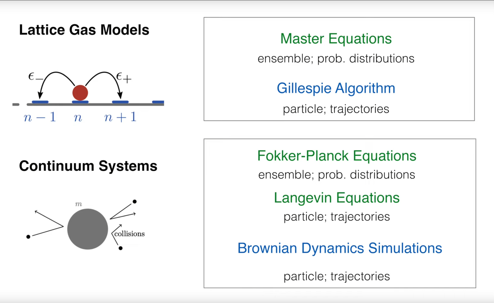
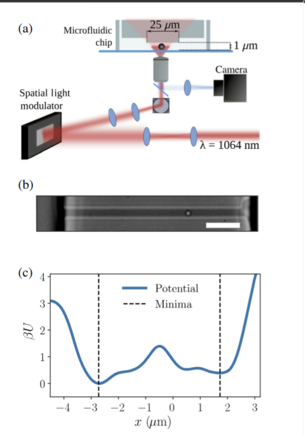
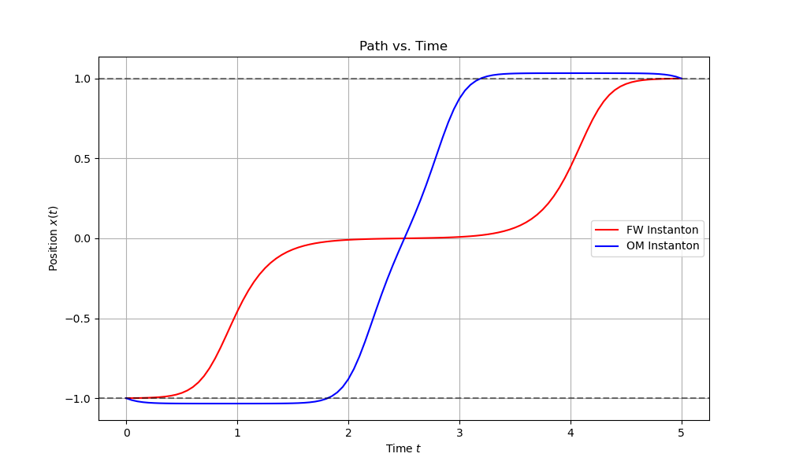
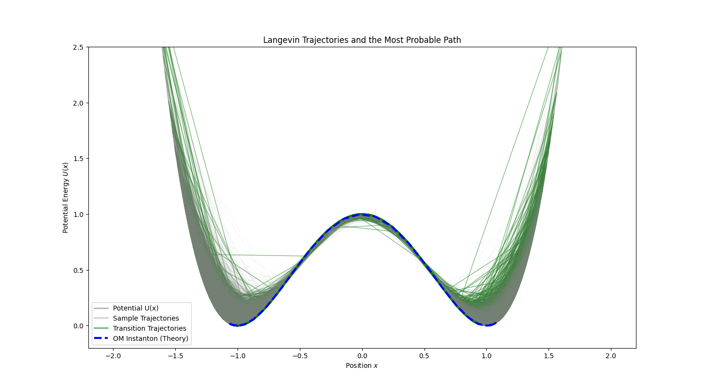
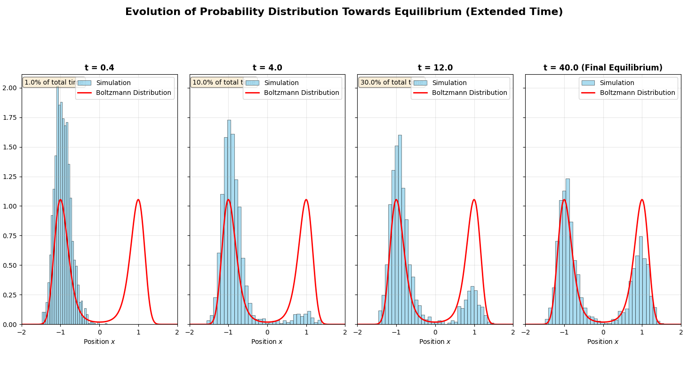

引言：随机动力学的新视角¶
在之前的课程中，我们已经学习了两种描述随机过程的主要方法：朗之万方程（Langevin Equations）和福克-普朗克方程（Fokker-Planck Equations）。朗之万方程从微观视角出发，追踪单个粒子在确定性力和随机力的共同作用下的具体轨迹；而福克-普朗克方程则采用宏观的统计视角，描述了大量粒子组成的系综的概率密度如何随时间演化。这两种方法分别对应于追踪"一棵树"的生长与描绘"整片森林"的变迁。
这节课将引入一种全新的、功能强大的理论框架——路径积分（Path Integral）。这一方法为我们提供了第三种看待随机动力学的视角。它不再局限于描述系统状态从一个瞬间到下一个瞬间的演变，而是着眼于整个时间段内的完整历史或轨迹 \(x(\tau)\)。路径积分的核心思想是为系统可能经历的每一条完整路径赋予一个概率权重。通过对所有可能的路径进行"求和"（即泛函积分），我们可以计算出各种感兴趣的物理量，例如从一个状态转移到另一个状态的总概率。
这种思想与量子力学中的费曼路径积分有异曲同工之妙。在量子力学中，一个粒子从点 \(A\) 到点 \(B\) 的跃迁振幅是通过对所有连接 \(A\) 和 \(B\) 的可能路径的相位因子 \(e^{iS/\hbar}\) 进行积分得到的，其中 \(S\) 是经典作用量。在随机动力学中，我们将采用类似的方法，但积分的权重不再是复数的相位因子，而是一个实数的概率，其形式通常为 \(e^{-S}\)，其中 \(S\) 是一个我们称之为"作用量"的泛函，它衡量了某条特定路径发生的"不可能性"或"代价"。
通过构建这一框架，我们将能够不仅回答"粒子在下一时刻会出现在哪里？"这类问题，更能回答"粒子在一段时间内最可能遵循哪条路径从 \(A\) 点到达 \(B\) 点？"这类深刻的问题。这一视角不仅在理论上极为优美，更在现代物理学的许多前沿领域，如软物质物理、生物物理以及金融建模中，展现出强大的实用价值。
1. 回顾：随机模型的理论图景¶
在正式进入路径积分的数学构造之前，Erwin Frey 教授先回顾了一下已经学过的描述随机系统的几种模型，以明确路径积分在整个理论体系中的位置。 
我们可以从两个维度来对这些模型进行分类：空间是离散的还是连续的，以及我们描述的是系综还是单个轨迹。
-
离散与连续系统：
-
格点气模型 (Lattice Gas Models)：粒子被限制在离散的格点上，适用于描述晶体、自旋系统等。
-
连续系统 (Continuum Systems)：粒子可以在连续的空间中运动，通过碰撞等相互作用，这是我们更常遇到的情况，例如溶液中的胶体颗粒。
-
系综与轨迹描述：这是理解不同随机模型核心思想的关键区别。
-
系综视角 (Ensemble View - 描述森林)：这类方法关注的是系统状态的概率分布 \(P(x,t)\) 如何随时间演化。
-
主方程 (Master Equations)：描述系统在离散状态空间中跳转的概率演化，是系综描述的基石。
-
福克-普朗克方程 (Fokker-Planck Equations)：当系统状态空间变为连续时，主方程就过渡为福克-普朗克方程。它是描述概率密度函数 \(P(x,t)\) 在漂移和扩散作用下如何演化的偏微分方程。
-
-
轨迹视角 (Trajectory View - 描述一棵树)：这类方法关注的是系统单个实现（realization）的具体路径 \(x(t)\)。
-
吉莱斯皮算法 (Gillespie Algorithm)：一种精确的随机模拟方法，用于生成离散状态跳转系统的单条轨迹，常用于化学反应网络。
-
朗之万方程 (Langevin Equations)：描述连续变量（如粒子位置）在确定性力（漂移）和随机力（噪声）作用下的演化。它是随机微分方程，其解就是一条随机轨迹。
-
布朗动力学模拟 (Brownian Dynamics Simulations)：基于朗之万方程的计算机模拟方法，用于生成粒子的运动轨迹。
-
这节课的出发点正是我们熟悉的朗之万方程。考虑一个由过阻尼朗之万方程描述的一维系统：
其中，\(x(t)\) 是粒子的位置，\(\dot{x}(t)\) 是其速度。\(A(x(t))\) 代表确定性的漂移项，例如由外势场 \(U(x)\) 产生的力 \(F(x)\) 所导致，即 \(A(x)=F(x)/\gamma\)，其中 \(\gamma\) 是摩擦系数。而 \(\xi(t)\) 是随机噪声项，它代表了来自周围环境（如溶剂分子）的随机碰撞。
对于最简单且最常见的高斯白噪声，它具有以下统计性质：
- 零均值：在任何时刻，噪声的平均效应为零。
- Delta相关（无记忆性）：噪声在不同时刻是完全不相关的。
这里的 \(D\) 是扩散系数，它量化了噪声的强度。根据涨落-耗散定理，它与系统的温度和摩擦系数相关 (\(D=k_B T/\gamma\))。
至此，我们已经有了描述单条轨迹如何演化的规则（朗之万方程）以及驱动这种演化的随机力的统计特性。这节课的核心问题随之而来：我们能否利用已知的噪声统计特性，去推导出一个描述粒子完整轨迹 \(x(\tau)\)（在 \(0 \leq \tau \leq t\) 时间段内）的概率泛函 \(P[x(\tau)]\)？这正是路径积分表述要解决的问题。
2. 噪声的概率：从离散步到连续路径¶
构建整个路径积分形式的第一步，也是最基础的一步，是为噪声本身 \(\xi(\tau)\) 建立一个概率泛函。我们的策略是"先离散，后取连续极限"。
所谓泛函，普通函数是“数的函数”，而泛函是“函数的函数”。我们熟悉的函数，是输入一个数（比如时间 \(t\)），得到另一个数（比如温度 \(T(t)\)）。而泛函，是输入一整个函数（比如一条完整的曲线 \(T(t)\)），得到一个数（比如这条曲线所代表的“平均能量”或“总路径长度”）。
2.1. 时间的离散化¶
我们将时间区间 \([0,t]\) 分割成 \(n\) 个微小的时间步长 \(\Delta t\)，使得 \(t=n\Delta t\)。在每个时间点 \(\tau_i=i\Delta t\)（其中 \(i=0,1,\ldots,n-1\)），噪声的值为 \(\xi_i=\xi(\tau_i)\)。由于我们处理的是白噪声，不同时间点的噪声是统计独立的。因此，我们可以将每个 \(\xi_i\) 视为一个独立的、服从高斯分布的随机变量。其概率密度函数为：
其中 \(\sigma_\xi^2\) 是在单个时间步长 \(\Delta t\) 内噪声的方差。
2.2. 离散路径的联合概率¶
由于每个 \(\xi_i\) 都是独立同分布的（iid），那么观测到一条特定的离散噪声路径 \((\xi_0,\xi_1,\ldots,\xi_{n-1})\) 的联合概率就是所有单个概率的乘积：
$$ p(\xi_0, \xi_1, \ldots, \xi_{n-1}) = \prod_{i=0}^{n-1} p(\xi_i) = \left( \frac{1}{2\pi\sigma_\xi^2} \right)^{n/2} \exp \left( -\sum_{i=0}^{n-1} \frac{\xi_i^2}{2\sigma_\xi^2} \right) $$ 我们主要关心的是指数部分，因为它决定了概率的相对大小。
2.3. 连续极限¶
现在，我们进行关键的一步：让时间步长 \(\Delta t \to 0\) 并且步数 \(n \to \infty\)，同时保持总时间 \(t=n\Delta t\) 不变。在这个极限下，离散的求和将过渡到连续的积分。
首先，我们需要建立离散方差 \(\sigma_\xi^2\) 和连续扩散系数 D 之间的关系。我们通过匹配离散和连续形式下的噪声自相关函数来实现这一点。
离散形式下，自相关为 \(\langle\xi_i\xi_j\rangle=\sigma_\xi^2\delta_{ij}\)。
连续形式下，自相关为 \(\langle\xi(t)\xi(t')\rangle=2D\delta(t-t')\)。
将连续形式在离散时间点上进行平均，可以得到：
比较两种形式，我们得到 \(\sigma_\xi^2=2D/\Delta t\)。
现在，我们将这个关系代入到联合概率的指数项中：
当 \(\Delta t \to 0\) 时，这个黎曼和（Riemann sum）就变成了积分：
2.4. 噪声的概率泛函¶
最终，我们得到了描述一条连续噪声路径 ξ(τ) 的概率泛函。这个概率正比于：
这个表达式是路径积分表述的基石。它告诉我们，一条噪声历史轨迹发生的概率由其"能量"（即 \(\xi^2\) 对时间的积分）指数衰减决定。噪声的振幅越大、持续时间越长，这条轨迹就越不可能发生。
在形式上，完整的路径积分写作：
其中，\(\mathcal{O}[\xi(\tau)]\) 是任意一个依赖于噪声路径的观测量（泛函）。\(\mathcal{D}[\xi(\tau)]\) 是所谓的"路径积分测度"，它代表了对所有可能路径的求和，形式上可以理解为 \(\lim_{n\to\infty}\prod_{i=0}^{n-1}\frac{d\xi_i}{\sqrt{2\pi\sigma_\xi^2}}\)，包含了归一化因子。
3. 从噪声到粒子：翁萨格-马赫卢普作用量¶
我们已经成功地为噪声路径构建了概率泛函。现在，我们的核心任务是利用它来找到粒子路径 \(x(\tau)\) 的概率泛函 \(P[x(\tau)]\)。这里的关键策略是在泛函积分中进行变量替换，从噪声路径 \(\xi(\tau)\) 变换到粒子路径 \(x(\tau)\)。
3.1. 变量变换¶
朗之万方程本身 \(\dot{x}(\tau)=A(x(\tau))+\xi(\tau)\) 提供了这两个路径之间的一一对应关系。我们可以重新排列它，得到：
将这个关系代入我们刚刚推导出的噪声概率泛函的指数部分，我们得到：
因此，粒子路径的概率似乎应该是：
然而，这个表达式并不完整。任何熟悉多变量积分的人都知道，变量替换需要乘以一个雅可比行列式（Jacobian determinant）。在泛函积分中，这个雅可比行列式同样存在，并且至关重要。
3.2. 雅可比行列式：一个微妙但关键的因子¶
在泛函积分中，雅可比行列式是 \(\det\left(\frac{\delta \xi(\tau')}{\delta x(\tau)}\right)\)。直接计算这个泛函行列式是相当复杂的。为了理解它的来源和影响，我们再次回到离散化的图像。
朗之万方程的离散形式可以写作：
其中 \(\theta \in [0,1]\) 是一个参数，代表了我们在评估漂移项 \(A(x)\) 时所选择的时间点。
-
\(\theta=0\) 对应伊东 (Itô) 诠释，使用时间步开始时的位置 \(x_i\)。
-
\(\theta=1\) 对应反伊东 (anti-Itô) 诠释，使用结束时的位置 \(x_{i+1}\)。
-
\(\theta=1/2\) 对应斯特拉托诺维奇 (Stratonovich) 诠释，使用中点位置的近似。
在随机微分方程的数值求解中，Itô、Stratonovich 和 anti-Itô 诠释对应于对漂移项 \(A(x)\) 在时间区间 \([t_i, t_{i+1}]\) 内取值位置的不同选择。具体而言，它们由参数 \(\theta \in [0,1]\) 控制：当 \(\theta = 0\) 时为 Itô 诠释，表示在时间步开始处（\(x_i\)）计算 \(A(x)\)；当 \(\theta = 1/2\) 时为 Stratonovich 诠释，近似在中点取值，保持了经典链式法则的适用性，适用于物理系统中连续噪声的极限情形；当 \(\theta = 1\) 时为 anti-Itô 诠释，则在时间步结束处（\(x_{i+1}\)）取值。这种离散化方式的选择不仅影响数值稳定性，更关键的是决定了路径积分中的雅可比修正项，从而导致不同的连续极限行为和物理或数学解释。
通俗地说，这三种诠释就像是你在开车时决定“看哪个时刻的方向盘位置”来预测车子下一步的位置。Itô 是只看现在的方向盘（最保守，用于金融）；Stratonovich 是估计一下中间时刻的方向盘（更符合物理直觉，如能量守恒）；而 anti-Itô 则是“预知未来”，看下一刻的方向盘（现实中不可能，主要用于理论对称性）。因此，它们代表了处理随机过程中“何时采样系统状态”的不同规则，选择哪种取决于你研究的问题是偏向数学严谨性还是物理真实性。
从这个离散方程中，我们可以解出 \(\xi_i\)：
变量变换的雅可比矩阵的元素是 \(J_{ij}=\frac{\partial \xi_i}{\partial x_j}\)。这是一个下三角矩阵，其行列式等于对角元素的乘积。对角元素为：
（注：严格的推导会更复杂，涉及到 \(x_{i+1}\) 对 \(x_i\) 的依赖，但最终结果的形式是相似的）。在连续极限下，这个雅可比行列式的对数会给作用量带来一个额外的修正项。经过严谨的推导，可以证明这个修正项是：
这个项的出现意味着，路径的概率不仅取决于它与确定性轨迹的偏离程度，还取决于它所经过区域的漂移场的梯度，并且这个贡献的大小依赖于我们最初选择的离散化方案 \(\theta\)。
3.3. 翁萨格-马赫卢普作用量¶
将雅可比的贡献与之前的指数项结合起来，我们得到了粒子路径 \(x(τ)\) 的完整概率泛函：
其中，\(S[x(\tau)]\) 就是该系统的作用量 (Action)，其具体形式为：
对于随机过程，物理上最自洽和最常用的诠释是斯特拉托诺维奇（Stratonovich）诠释，它对应于 \(\theta=1/2\)。在这种情况下，作用量被称为翁萨格-马赫卢普 (Onsager-Machlup, OM) 作用量：
这个作用量泛函是本讲座的核心结果。它为任何一条可能的粒子轨迹 \(x(\tau)\) 分配了一个数值，这个数值的负指数就正比于该轨迹发生的概率。作用量越小，路径发生的概率就越大。
Onsager-Machlup 理论由物理学家 Lars Onsager 和 Stefan Machlup 于 1953 年在论文 Fluctuations and Irreversible Processes 中提出，旨在将热力学涨落过程赋予类似于经典力学“最小作用量”的路径描述；其核心思想是：一个布朗粒子的实际轨迹虽然随机，但每条可能路径都有一个“发生概率”，正比于 \(\exp(-S_{OM}[x(\tau)])\)，其中作用量 \(S_{OM}\) 不仅包含路径偏离平均运动的“动能项”，还包含漂移场梯度的修正项；这一理论的本质在于揭示了非平衡统计物理中的时间反演对称性破缺与路径权重的关系，并为从微观涨落推导宏观不可逆性提供了桥梁；如今，OM 作用量广泛应用于物理、生物物理（如单分子轨迹分析）、软物质动力学、路径采样算法设计等领域，成为理解噪声驱动系统中最概然路径、过渡态、熵产生等关键概念的基础工具。
4. 物理意义：最概然路径与实验现实¶
翁萨格-马赫卢普（OM）作用量的表达式包含了深刻的物理意义，并且正如教授在课堂上提到的，它不仅仅是一个理论构造，其正确性已经得到了现代高精度实验的验证。
4.1. 解构作用量¶
OM作用量由两部分组成，每一部分都有其独特的物理诠释。
- 第一项：弗雷德林-温策尔 (Freidlin-Wentzell, FW) 作用量
$$ \mathcal{L}_{FW} = \frac{1}{4D}(\dot{x} - A(x))^2 $$
这一项也被称为弗雷德林-温策尔作用量的拉格朗日量。它的物理意义非常直观：它量化了粒子实际速度 \(\dot{x}\) 偏离确定性漂移速度 \(A(x)\) 的"代价"。如果粒子完全按照确定性力场运动，即 \(\dot{x}=A(x)\)，那么这一项为零，代价最小。任何由噪声引起的偏离都会导致这一项大于零，从而使得路径的概率降低。在弱噪声极限 (\(D \to 0\)) 下，系统为了使总作用量最小化，会倾向于选择使这一项为零的路径，也就是经典确定性轨迹。因此，FW作用量描述了在噪声很小的情况下，系统最可能的行为。
- 第二项：雅可比/曲率修正项
$$ \mathcal{L}_{corr} = \frac{1}{2}A'(x)$$
这一项是区分OM作用量和FW作用量的关键，它源于泛函积分中微妙的雅可比行列式。它的物理意义与粒子所处位置的势能景观的曲率紧密相关。回忆一下，漂移项 \(A(x)\) 与势能 \(U(x)\) 的关系是 \(A(x)=F(x)/\gamma=-U'(x)/\gamma\)。因此，这一项可以写成：
-
当粒子处于势阱底部（稳定点）时，势能是凸的，\(U''(x)>0\)。这导致修正项 \(A'(x)<0\)，从而减小了作用量，增加了路径的概率。这意味着，粒子在势阱中逗留的路径比在其他地方更可能发生。
-
当粒子处于势垒顶部（不稳定点）时，势能是凹的，\(U''(x)<0\)。这导致修正项 \(A'(x)>0\)，从而增加了作用量，抑制了路径的概率。这意味着，粒子在势垒顶部短暂停留的路径发生的可能性被大大降低了。
总而言之，雅可比修正项说明，在有限温度（\(D>0\)）下，路径的概率不仅取决于它是否"听从"确定性力的引导，还取决于它所探索的势能景观的局部稳定性。系统更"喜欢"在稳定的区域（势阱）进行涨落。
4.2. 与实验的连接：Gladrow等人的工作 (2021)¶
教授在课堂上特别提及了Jannes Gladrow等人在Physical Review X上发表的一篇论文，该论文通过精巧的实验，直接"测量"了路径的概率，为我们刚才讨论的理论提供了坚实的证据。
Gladrow, J., Keyser, U. F., Adhikari, R., & Kappler, J. (2021). Experimental measurement of relative path probabilities and stochastic actions. Physical Review X, 11(3), 031022.
4.2.1. 实验挑战与"逗留概率"¶
一个根本性的难题是：任何一条精确的连续路径 \(x(\tau)\)，其发生的概率都是无穷小，即概率为零。这使得路径积分看起来像一个纯粹的数学形式，无法直接测量。
Gladrow等人的解决方案是引入逗留概率 (sojourn probability) 的概念。他们不测量粒子完全遵循某条理论路径 \(\varphi(t)\) 的概率，而是测量粒子的实际轨迹在一段时间内始终保持在以 \(\varphi(t)\) 为中心、半径为 \(R\) 的一个微小"管道"内的概率 \(P_R^\varphi(t)\)。这是一个有限的、非零的、可以在实验中测量的量。通过测量两条不同参考路径 \(\varphi_1\) 和 \(\varphi_2\) 的逗留概率之比，并在实验后通过数据外推至管道半径 \(R \to 0\) 的极限，他们就能够实验性地确定理论路径概率之比 \(e^{-S[\varphi_1]}/e^{-S[\varphi_2]}\)。这一巧妙的设计，将抽象的路径积分概念转化为了一个可操作的物理观测量。
4.2.2. 实验的裁决：OM作用量胜出¶
该实验的核心装置是一个被激光光镊捕获在微通道中的胶体颗粒，激光制造了一个双势阱。通过高速摄像机追踪颗粒的位置，他们获得了大量的随机轨迹数据。

实验的关键发现是：在室温下（一个典型的有限温度环境），测量得到的路径概率比与使用翁萨格-马赫卢普（OM）作用量的理论预测完美吻合，而与使用更简单的弗雷德林-温策尔（FW）作用量的预测则存在显著偏差。
这证明了我们推导出的雅可比修正项 \(\frac{1}{2}A'(x)\) 并非可有可无的数学细节，它具有真实的、可测量的物理效应。在有限温度下，它对于正确描述系统的涨落行为是必不可少的。这场理论与实验的对话，将关于伊东和斯特拉托诺维奇诠释的选择，从一个纯粹的数学约定问题，提升到了一个由物理现实决定的基本原则。
4.2.3. 作为物理实体的"最概然路径"（瞬子）¶
理论上，从一个稳定态（如一个势阱）跃迁到另一个稳定态是一个小概率事件。在所有可能实现这一跃迁的路径中，存在一条或几条概率最大的路径，我们称之为最概然路径 (most probable path) 或瞬子 (instanton)。理论上，它可以通过最小化作用量泛函 \(S[x(\tau)]\) 得到。
Gladrow等人的实验进一步将瞬子的概念实体化了。他们通过分析实验数据，找到了使得"管道"的逃逸率积分最小的路径，并将其作为实验测定的瞬子。结果显示，这条从实验数据中提取出的路径，与理论上通过最小化OM作用量得到的瞬子路径惊人地一致。这表明，瞬子并非纯粹的理论解，它真实地代表了系统在进行稀有事件（如越过势垒）时所遵循的"典型"或"中心"路径。
| 特征 | 弗雷德林-温策尔 (FW) 作用量 | 翁萨格-马赫卢普 (OM) 作用量 |
|---|---|---|
| 拉格朗日量 | \(\mathcal{L}_{FW} = \frac{1}{4D}(\dot{x} - A(x))^2\) | \(\mathcal{L}_{OM} = \frac{1}{4D}(\dot{x} - A(x))^2 + \frac{1}{2}A'(x)\) |
| 来源 | 在弱噪声 (\(D \to 0\)) 极限下自然出现；对应伊东离散化 (\(\theta = 0\)) | 来自于包含正确雅可比行列式的变量代换；对应斯特拉托诺维奇离散化 (\(\theta = 1/2\)) |
| 物理适用范围 | 仅在渐近低温或极快转变过程中能准确描述最概然路径。 | 在有限温度下准确描述路径概率和最概然路径。 |
| 实验验证 | 与室温下的胶体颗粒实验数据不符。 | 与实验数据高度吻合。 |
| 核心物理 | 捕捉了轨迹偏离确定性动力学的代价。 | 同时捕捉了偏离代价和势能景观曲率对涨落的影响。 |
4.3. Python模拟1：双势阱中的瞬子¶
为了直观地理解FW和OM瞬子之间的区别，我们可以通过数值计算来找到它们。我们将一个路径离散化为一系列点，然后使用优化算法寻找能使离散化的作用量最小的路径。
下面的Python代码定义了一个双势阱，并计算了连接两个势阱的FW和OM瞬子。
- 目的: 该代码旨在数值计算并可视化一个在双势阱 \(U(x) = (x^2 - 1)^2\) 中，从一个势阱底部 (\(x=-1\)) 跃迁到另一个势阱底部 (\(x=1\)) 的“最可几路径”（也称为瞬子，Instanton）。
代码定义了两种不同的“作用量”或“代价函数”：
-
弗雷德林-温策尔 (Freidlin-Wentzell, FW) 作用量:
定义为：\(\mathcal{S}_{\text{FW}} = \int \frac{(\dot{x} - A)^2}{4D} dt\)，对应的拉格朗日量为： $$ \text{Lagrangian_fw} = \frac{(\dot{x} - A)^2}{4D} $$ 这对应于翁萨格-马赫卢普作用量中的主项，仅考虑路径偏离确定性轨迹的代价。
-
翁萨格-马赫卢普 (Onsager-Machlup, OM) 作用量:
在 FW 作用量的基础上增加了一个修正项，完整形式为： $$ \mathcal{S}_{\text{OM}} = \int \left[ \frac{(\dot{x} - A)^2}{4D} + \frac{1}{2} \nabla A \right] dt $$ 其中修正项为 \(\text{Lagrangian_om} = 0.5 \times A'\)，\(A'\) 是漂移项 \(A(x)\) 的空间导数（即 \(A' = \frac{dA}{dx}\)）。这个修正项来源于从噪声路径到粒子路径的坐标变换（雅可比行列式），在物理上至关重要。
import numpy as np
import matplotlib.pyplot as plt
from scipy.optimize import minimize
# Define physical parameters
gamma = 1.0 # Friction coefficient
D = 0.05 # Reduce diffusion coefficient to enhance differences
# 1. Define double-well potential and its derivatives
def potential(x):
"""Double-well potential U(x) = (x^2 - 1)^2"""
return (x**2 - 1)**2
def force(x):
"""Force F(x) = -U'(x)"""
return -4 * x * (x**2 - 1)
def drift(x):
"""Drift term A(x) = F(x) / gamma"""
return force(x) / gamma
def drift_prime(x):
"""Derivative of drift term A'(x)"""
return (-12 * x**2 + 4) / gamma
# 2. Discretized action
def get_action(path, dt, action_type='OM'):
"""Calculate discrete action of path"""
x = path
x_dot = np.diff(x) / dt
x_mid = (x[:-1] + x[1:]) / 2 # Midpoints for evaluating A(x) and A'(x)
A = drift(x_mid)
A_prime = drift_prime(x_mid)
# FW Lagrangian
lagrangian_fw = (x_dot - A)**2 / (4 * D)
if action_type == 'FW':
action = np.sum(lagrangian_fw * dt)
elif action_type == 'OM':
# OM correction term
lagrangian_om_corr = 0.5 * A_prime
action = np.sum((lagrangian_fw + lagrangian_om_corr) * dt)
else:
raise ValueError("action_type must be 'FW' or 'OM'")
return action
# 3. Numerical optimization to find instanton
# Time and path settings
T_total = 8.0 # Increase total time
N_points = 201 # Increase number of path points
dt = T_total / (N_points - 1)
time = np.linspace(0, T_total, N_points)
# Initial path guess (straight line from -1 to +1)
initial_path = np.linspace(-1, 1, N_points)
# Optimization functions
def objective_fw(p):
return get_action(p, dt, 'FW')
def objective_om(p):
return get_action(p, dt, 'OM')
# Run optimization
# Fix start and end points of path
cons = ({'type': 'eq', 'fun': lambda x: x[0] + 1},
{'type': 'eq', 'fun': lambda x: x[-1] - 1})
print("Minimizing FW action...")
result_fw = minimize(objective_fw, initial_path, constraints=cons, method='SLSQP',
options={'maxiter': 1000, 'ftol': 1e-9})
path_fw = result_fw.x
print("FW minimization successful:", result_fw.success)
print("FW action value:", result_fw.fun)
print("Minimizing OM action...")
# Use FW result as initial guess for OM
result_om = minimize(objective_om, path_fw, constraints=cons, method='SLSQP',
options={'maxiter': 1000, 'ftol': 1e-9})
path_om = result_om.x
print("OM minimization successful:", result_om.success)
print("OM action value:", result_om.fun)
# 4. Plotting
plt.figure(figsize=(10, 6))
x_plot = np.linspace(-1.5, 1.5, 200)
U_plot = potential(x_plot)
plt.plot(x_plot, U_plot, 'k-', label='Potential $U(x)=(x^2-1)^2$')
plt.plot(path_fw, potential(path_fw), 'r.--', label='FW Instanton')
plt.plot(path_om, potential(path_om), 'b.--', label='OM Instanton')
plt.title('Most Probable Paths (Instantons) in a Double-Well Potential')
plt.xlabel('Position $x$')
plt.ylabel('Potential Energy $U(x)$')
plt.ylim(-0.2, 2)
plt.legend()
plt.grid(True)
plt.show()
# Plot path vs. time
plt.figure(figsize=(10, 6))
plt.plot(time, path_fw, 'r-', label='FW Instanton')
plt.plot(time, path_om, 'b-', label='OM Instanton')
plt.axhline(-1, color='k', linestyle='--', alpha=0.5)
plt.axhline(1, color='k', linestyle='--', alpha=0.5)
plt.title('Path vs. Time')
plt.xlabel('Time $t$')
plt.ylabel('Position $x(t)$')
plt.legend()
plt.grid(True)
plt.show()

-
模拟结果：运行上述代码，我们可以清晰地看到两条瞬子路径的区别。FW瞬子（红色）倾向于以接近恒定的速度直接从一个势阱移动到另一个势阱，因为它只关心最小化速度与漂移的差异。而OM瞬子（蓝色）则表现出不同的行为：它会更快地离开初始势阱的底部，快速穿过势垒区域，然后花更多时间缓慢地接近并稳定在目标势阱的底部。
-
物理内涵：这种差异正是 \(A'(x)\) 项作用的体现。在势阱底部，\(A'(x)\) 为负，减小了作用量，因此OM路径更"愿意"在这些区域花费时间。这个简单的模拟直观地再现了理论的核心思想，并与Gladrow等人的实验观察定性一致。
5. 高级工具：响应场 (MSRJD) 表述¶
到目前为止，我们推导出的翁萨格-马赫卢普作用量在物理上是完备的，但在进行具体计算（例如，计算观测量平均值）时可能并不方便。原因是作用量 \(S_{OM}[x]\) 对于变量 \(x\) 通常是高度非线性的（因为 \(A(x)\) 和 \(A'(x)\) 可能是复杂的函数），这使得泛函积分难以解析求解。
为了解决这个问题，物理学家们从量子场论中借鉴了一种强大的数学技巧，发展出了所谓的马丁-西贾-罗斯-詹森-德多米尼西斯 (Martin-Siggia-Rose-Janssen-de Dominicis, MSRJD) 表述，也常被称为响应场 (Response Field) 或动力学作用量 (Dynamical Action) 表述。
其核心思想是通过引入一个辅助场（或称响应场）\(\tilde{x}(\tau)\)，将原来对 \(x\) 非线性的作用量转化为一个对 \(x\) 和 \(\tilde{x}\) 都是线性的（或至多是二次的）新作用量，从而简化计算。
5.1. 推导思路 (哈伯德-斯特拉托诺维奇变换)¶
推导MSRJD作用量的标准方法是利用高斯积分的傅里叶表示，这本质上是一种哈伯德-斯特拉托诺维奇（Hubbard-Stratonovich）变换。我们从离散化的路径概率出发：
我们利用以下高斯积分恒等式：
将这个恒等式应用于指数项中的平方项，其中 \(y = (\dot{x} - A(x))\)。在离散形式中，我们对每一个时间步 \(i\) 都引入一个辅助变量 \(\tilde{x}_i\)。经过一系列代数运算并取连续极限，我们可以得到一个新的作用量 \(S'[x, \tilde{x}]\)。
5.2. MSRJD 作用量¶
根据教授在黑板上的推导，通过引入一个纯虚的响应场 \(i\tilde{x}\)，最终得到的路径概率可以表示为对两个场 \(x(\tau)\) 和 \(\tilde{x}(\tau)\) 的积分：
其中，MSRJD作用量（在斯特拉托诺维奇诠释下，\(\theta=1/2\)）为：
这个新的作用量有几个优点：
-
对 \(\dot{x}\) 线性：\(\dot{x}\) 项现在只是一次出现，这在处理时间导数时非常方便。
-
二次型结构：作用量在 \(\tilde{x}\) 中是二次的，在 \(x\) 中的非线性被隔离在 \(i\tilde{x}A(x)\) 项中。
-
微扰理论的起点：这种形式是应用微扰理论（例如，费曼图方法）研究随机动力学的标准出发点。我们可以将作用量分为"自由"部分（二次项）和"相互作用"部分（高次项），然后进行系统性的展开计算。
虽然MSRJD表述在技术上更为复杂，但它为处理强相互作用或非线性随机系统提供了一套系统化的、强大的计算工具，是连接随机过程与统计场论的重要桥梁。
6. 模拟实践：可视化随机路径¶
下面的模拟将直接求解朗之万方程，生成大量的随机轨迹，并与我们之前计算出的最概然路径进行比较。
6.1. Python模拟2：朗之万动力学与路径分布¶
我们将使用简单的欧拉-丸山（Euler-Maruyama）方法来数值求解双势阱中的过阻尼朗之万方程。
import numpy as np
import matplotlib.pyplot as plt
# Use the same physical parameters and potential function as simulation 1
gamma = 1.0
D = 0.25 # Moderate diffusion coefficient, balancing transition rate and rarity
T_total = 40.0 # Further increase total time to ensure complete equilibrium
N_points = 801 # Further increase time resolution
dt = T_total / (N_points - 1)
time = np.linspace(0, T_total, N_points)
def potential(x):
return (x**2 - 1)**2
def drift(x):
return -4 * x * (x**2 - 1) / gamma
def drift_prime(x):
"""Derivative of drift term A'(x)"""
return (-12 * x**2 + 4) / gamma
# Simple calculation of OM instanton path (for plotting)
def get_simple_om_instanton():
"""Calculate simplified OM instanton path for visualization"""
from scipy.optimize import minimize
def get_action(path, dt):
x = path
x_dot = np.diff(x) / dt
x_mid = (x[:-1] + x[1:]) / 2
A = drift(x_mid)
A_prime = drift_prime(x_mid)
lagrangian_fw = (x_dot - A)**2 / (4 * D)
lagrangian_om_corr = 0.5 * A_prime
action = np.sum((lagrangian_fw + lagrangian_om_corr) * dt)
return action
# Simplified optimization
initial_path = np.linspace(-1, 1, N_points)
cons = ({'type': 'eq', 'fun': lambda x: x[0] + 1},
{'type': 'eq', 'fun': lambda x: x[-1] - 1})
try:
result = minimize(lambda p: get_action(p, dt), initial_path,
constraints=cons, method='SLSQP',
options={'maxiter': 1000, 'ftol': 1e-6})
if result.success:
return result.x
except:
pass
# If optimization fails, return a simple S-shaped curve
t_norm = np.linspace(0, 1, N_points)
return np.tanh(4 * (t_norm - 0.5))
# 1. Langevin simulator
def langevin_trajectory(x0, T, dt):
"""Generate a Langevin trajectory"""
n_steps = int(T / dt)
t = np.linspace(0, T, n_steps + 1)
x = np.zeros(n_steps + 1)
x[0] = x0
# Pre-generate all random numbers
noise = np.random.normal(0, 1, n_steps)
for i in range(n_steps):
A = drift(x[i])
stochastic_term = np.sqrt(2 * D * dt) * noise[i]
x[i+1] = x[i] + A * dt + stochastic_term
return t, x
# 2. Generate large number of trajectories
num_trajectories = 2000 # Increase total trajectories to get sufficient transition samples
trajectories = []
transition_paths = []
print(f"Simulating {num_trajectories} trajectories...")
for i in range(num_trajectories):
t, x = langevin_trajectory(x0=-1.0, T=T_total, dt=dt)
trajectories.append(x)
# Record successful transition paths (increase threshold for stricter definition of transition)
if x[-1] > 0.3: # Increase threshold to ensure truly reaching right potential well
transition_paths.append(x)
print(f"Found {len(transition_paths)} transition paths.")
print(f"Transition rate: {len(transition_paths)/num_trajectories*100:.1f}%")
trajectories = np.array(trajectories)
transition_paths = np.array(transition_paths)
# 3. Plotting
plt.figure(figsize=(12, 8))
# Plot potential background
x_plot = np.linspace(-2, 2, 200)
U_plot = potential(x_plot)
plt.plot(x_plot, U_plot, 'k-', alpha=0.3, label='Potential $U(x)$')
# First plot transition trajectories (at bottom layer)
if len(transition_paths) > 0:
# Only plot some transition trajectories to avoid excessive density
num_to_plot = min(len(transition_paths), 25) # Display at most 25 green trajectories
for i in range(num_to_plot):
plt.plot(transition_paths[i, :], potential(transition_paths[i, :]), color='green', alpha=0.5, linewidth=1)
# Then plot sample trajectories (at upper layer, increase transparency)
for i in range(min(150, num_trajectories)): # Display more gray trajectories but with higher transparency
plt.plot(trajectories[i, :], potential(trajectories[i, :]), color='gray', alpha=0.08, linewidth=0.8)
# Finally plot important paths (top layer)
if len(transition_paths) > 0:
# Plot average transition path
avg_transition_path = np.mean(transition_paths, axis=0)
plt.plot(avg_transition_path, potential(avg_transition_path), 'g-', linewidth=3, label='Average Transition Path')
# Overlay theoretical instanton path
print("Computing OM instanton path...")
path_om = get_simple_om_instanton()
plt.plot(path_om, potential(path_om), 'b--', linewidth=3, label='OM Instanton (Theory)')
plt.title('Langevin Trajectories and the Most Probable Path')
plt.xlabel('Position $x$')
plt.ylabel('Potential Energy $U(x)$')
plt.ylim(-0.2, 2.5)
# Create a custom legend
from matplotlib.lines import Line2D
legend_elements = [Line2D([0], [0], color='k', alpha=0.3, lw=2, label='Potential U(x)'),
Line2D([0], [0], color='gray', alpha=0.4, lw=2, label='Sample Trajectories'),
Line2D([0], [0], color='green', alpha=0.6, lw=2, label='Transition Trajectories'),
Line2D([0], [0], color='b', linestyle='--', lw=3, label='OM Instanton (Theory)')]
plt.legend(handles=legend_elements)
plt.show()
# Plot evolution of probability distribution over time
fig, axes = plt.subplots(1, 4, figsize=(24, 5), sharey=True)
# Adjust time points, covering longer time range to observe complete equilibrium process
time_points = [int(0.01 * N_points), int(0.1 * N_points), int(0.3 * N_points), N_points - 1]
for i, t_idx in enumerate(time_points):
ax = axes[i]
if i < 3:
time_label = f't = {time[t_idx]:.1f}'
else:
time_label = f't = {T_total:.1f} (Final Equilibrium)'
# Plot histogram of particle positions
ax.hist(trajectories[:, t_idx], bins=35, density=True, alpha=0.7,
color='skyblue', edgecolor='black', linewidth=0.5, label='Simulation')
# Plot theoretical equilibrium distribution (Boltzmann distribution)
x_theory = np.linspace(-2, 2, 200)
boltzmann_dist = np.exp(-potential(x_theory) / D)
boltzmann_dist /= np.trapz(boltzmann_dist, x_theory)
ax.plot(x_theory, boltzmann_dist, 'r-', linewidth=2, label='Boltzmann Distribution')
ax.set_title(time_label, fontsize=12, fontweight='bold')
ax.set_xlabel('Position $x$')
if i == 0:
ax.set_ylabel('Probability Density')
ax.legend()
ax.grid(True, alpha=0.3)
ax.set_xlim(-2, 2)
# Add text showing percentage of total time
if i < 3:
percentage = time[t_idx] / T_total * 100
ax.text(0.02, 0.98, f'{percentage:.1f}% of total time',
transform=ax.transAxes, verticalalignment='top',
bbox=dict(boxstyle='round', facecolor='wheat', alpha=0.5))
plt.suptitle('Evolution of Probability Distribution Towards Equilibrium (Extended Time)',
fontsize=16, fontweight='bold')
plt.tight_layout(rect=[0, 0.03, 1, 0.95])
plt.show()

- 轨迹云与瞬子：大量的灰色轨迹在初始的势阱（\(x=-1\)）附近涨落，少数轨迹（绿色）能够获得足够的随机"能量"越过势垒，到达另一个势阱（\(x=+1\)）。这些成功的跃迁路径形成了一个模糊的"管道"。当我们把理论计算出的OM瞬子（蓝色虚线）叠加在上面时，会发现它几乎完美地穿过了这个"管道"的中心。这直观地证明了瞬子确实是稀有事件的最概然路径。
 2. 概率分布的演化：第二组图展示了从轨迹视角到系综视角的联系。在初始时刻，所有粒子都集中在\(x=-1\)处。随着时间的推移，这个尖锐的分布逐渐展宽并向另一个势阱渗透。最终，在足够长的时间后，系统逐渐达到平衡，粒子位置的分布（直方图）与理论上的玻尔兹曼分布 \(P(x) \propto e^{-U(x)/D}\) 吻合。这表明，尽管路径积分和朗之万方程关注的是单条轨迹，但它们所描述的动力学过程最终能够正确地再现由福克-普朗克方程所描述
结论¶
这节课我们探索了描述随机动力学的第三条道路——路径积分表述。通过将随机过程视为所有可能路径的加权总和，我们获得了一个全局的、功能强大的理论框架。
-
我们从高斯白噪声的统计特性出发，通过"离散化-取连续极限"的方法，成功地为噪声本身和受其驱动的粒子的运动轨迹构建了概率泛函。
-
我们推导出了核心的物理量——翁萨格-马赫卢普作用量。通过解构其组成，我们理解了它不仅包含了粒子偏离确定性轨迹的"代价"（FW项），还精妙地融入了势能景观曲率对涨落行为的影响（雅可比项）。
-
至关重要的是，我们将这一理论框架与前沿的物理实验紧密联系起来。Gladrow等人的工作不仅通过"逗留概率"巧妙地解决了测量路径概率的难题，更以无可辩驳的数据证实了翁萨格-马赫卢普作用量在有限温度下的正确性，为理论的物理真实性提供了坚实的支撑。
-
最后，我们简要介绍了MSRJD响应场表述，它作为一种先进的计算工具，为使用统计场论的强大技术（如微扰展开和重整化群）来分析复杂的非平衡系统打开了大门。
总而言之，路径积分不仅提供了一种数学上等价于朗之万和福克-普朗克方程的描述，更带来了一种全新的物理直觉。它让我们能够思考和计算关于"整个历史"的问题，例如稀有事件的最概然路径，从而深刻地揭示了涨落世界中隐藏的秩序与规律。